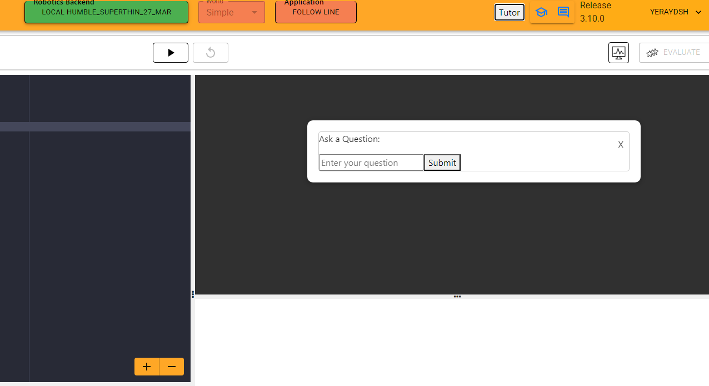
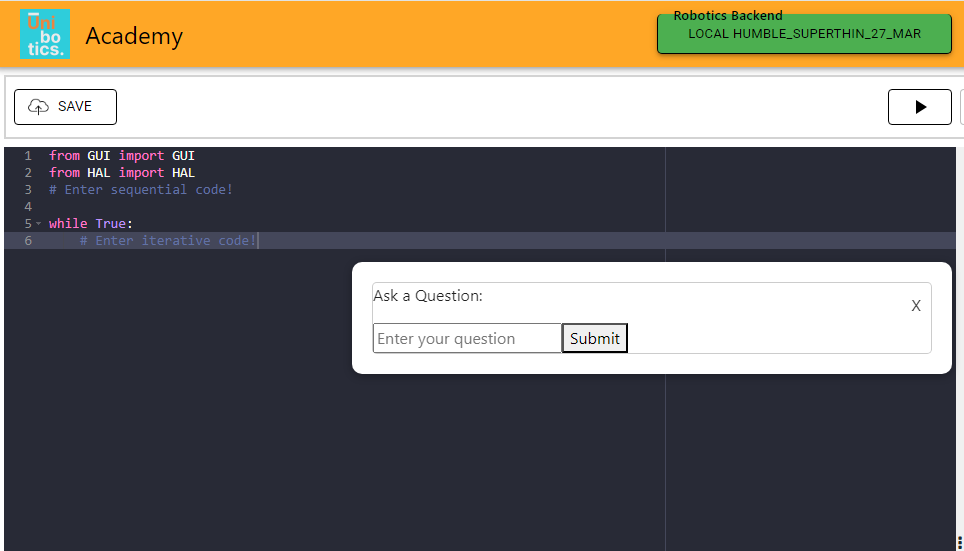

Week 11 (April 15th - April 19th)
In this eleventh update, I began by modifying the visual aspect of the intelligent tutor within the exercise page.
Previously, a window would appear that blocked you from using the page, allowing you only to type a question or close that window.
Now, this window does not block anything, so the user can write code while, for example, viewing the answer to a question they asked.

Additionally, I modified the way of communication between the web browser and the intelligent tutor, as before they did not use the Django server.
Now, for the web browser to communicate with the tutor, it is necessary to pass information through the server and vice versa.
Another advancement I made this week was the ability to load a specific model depending on the exercise the client is in.
That is, for example, if the user is in the follow line exercise, the corresponding model will be loaded.
This has been made possible by using the URL; if the link the user is on contains the name "follow line," their question and answer bank will be loaded.
Furthermore, throughout the week's progress, I created JSON files for four more exercises, specifically for the exercises "Labyrinth Escape,"
"Rescue People," "Power Tower Inspection," and "3D Reconstruction," so that this tutor is adapted to more and more exercises.
Lastly, I finished by modifying again the visual aspect of the tutor, specifically the appearance of the window that appears,
so that it can now be dragged with the mouse and placed in the most comfortable position. And, as in every week, I finished by updating the blog with one more week.
